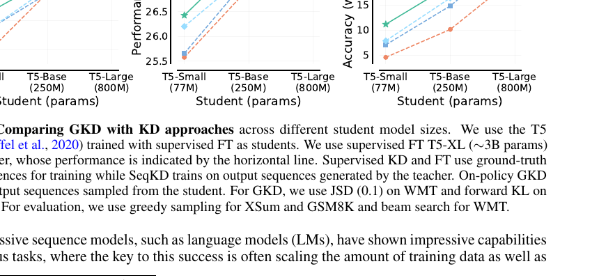
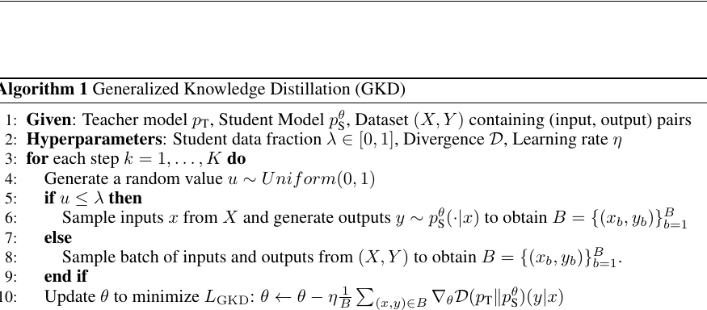
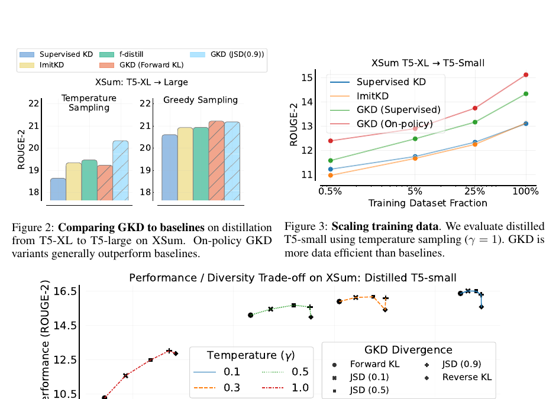
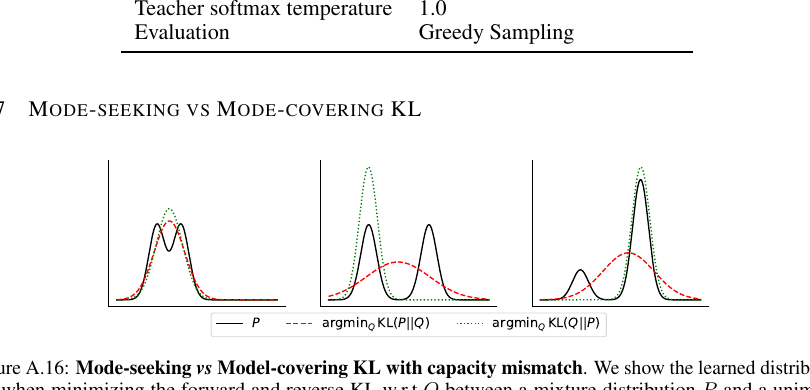
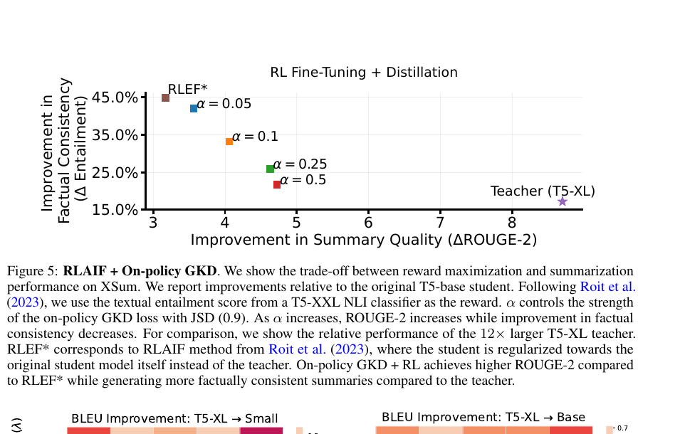
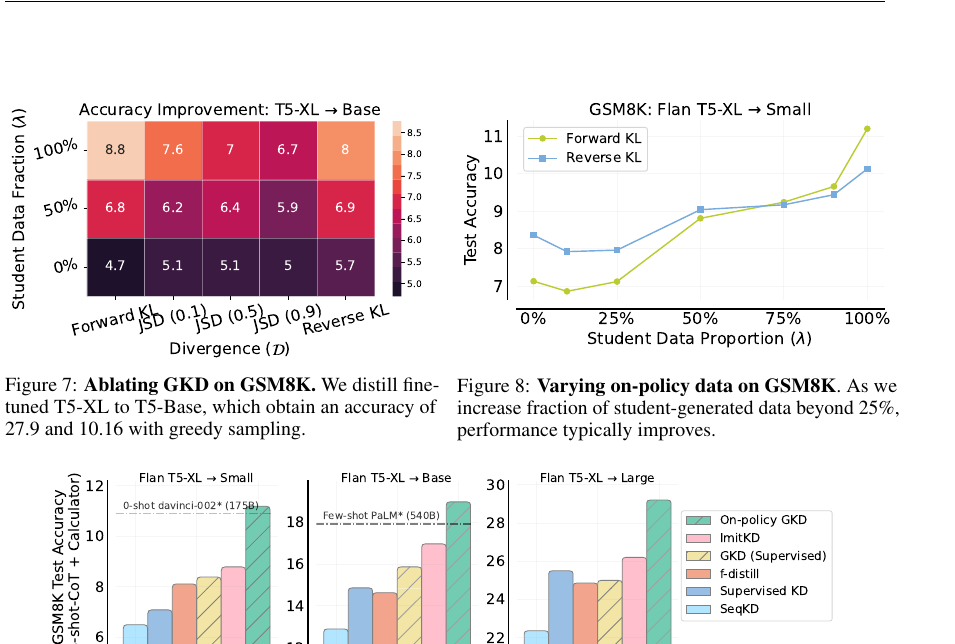
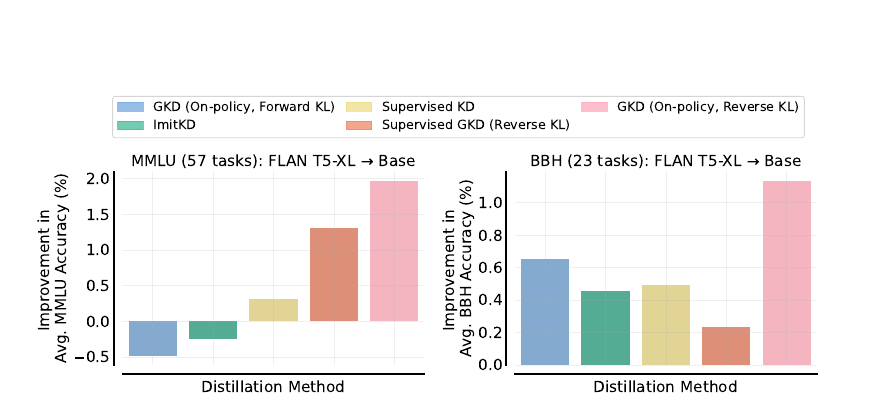

Paper Reading Note
让学生在自己的错误里学习
这篇论文把语言模型蒸馏重新解释为 imitation learning：学生先生成答案，教师再在学生真实访问的前缀状态上给 token-level 反馈。GKD 的力量来自这个小小的位置移动。

Figure 1: on-policy GKD 在摘要、翻译、数学推理三个任务上，对不同学生模型尺寸都带来更大蒸馏增益。
TL;DR
传统 KD 在固定答案序列上训练学生，但自回归推理时，学生会沿着自己生成的前缀继续预测。一旦早期 token 偏离训练集，后续状态也偏离，教师从未在这些状态上给过反馈。
Generalized Knowledge Distillation (GKD) 的做法是：让学生生成输出，再让教师在这些学生生成的前缀上提供 token-level 分布。它还把数据来源和散度函数都参数化，既能覆盖 supervised KD，也能得到纯 on-policy KD。
一句话直觉
不要只让学生看标准答案，要让它把自己的草稿交给老师批改。
关键变量
lambda 控制学生生成数据比例；D 控制教师-学生分布之间的散度。
主结论
on-policy 数据普遍有用；最佳散度依任务而变，不能一概默认 forward KL。
背景动机
语言模型蒸馏的目标是把大教师模型的能力压缩到小学生模型中。常见方法包括 supervised fine-tuning、sequence-level KD 和 supervised KD：前两者让学生拟合固定答案，后者让学生在固定答案路径上匹配教师 token 分布。
论文借用了 imitation learning 的视角。只学习专家轨迹的 learner 部署后会进入自己的状态分布，遇到专家没标注过的状态。GKD 则让学生主动暴露自己的轨迹，教师在这些轨迹上作为 interactive expert 给反馈。
核心方法
设输入为 x，输出序列为 y，教师为 pT，学生为 pS(theta)。自回归模型在前缀 y<n 和输入 x 下预测下一个 token 分布。
D(pT || pS_theta)(y | x)
= (1 / Ly) * sum_{n=1}^{Ly}
D( pT(. | y<n, x) || pS_theta(. | y<n, x) )
这里的散度不是只看最终答案，而是对序列中每个前缀状态计算教师和学生的分布差异。GKD 的总目标把固定数据和学生生成数据混合起来：
L_GKD(theta)
= (1 - lambda) * E_{(x,y)~(X,Y)} [ D(pT || pS_theta)(y | x) ]
+ lambda * E_{x~X} E_{y~pS(.|x)}
[ D(pT || pS_theta)(y | x) ]
- 每个训练 step 抽一个随机数 u。
- 如果 u <= lambda，让学生对输入 x 生成输出 y。
- 否则，从固定数据集 (X, Y) 采样输入输出对。
- 教师在所选序列的每个前缀上给 token-level 概率。
- 用选定散度 D 更新学生，但不对采样过程反向传播。

为什么不穿过采样反传？
论文把学生采样看作收集训练状态，而不是 policy gradient。这样训练更像监督学习，方差低，也少了 sequence-level RL 中常见的长度偏置、reward hacking 和高方差稳定化问题。
散度选择
GKD 另一个关键点是：蒸馏不一定只用 forward KL。不同散度带来的质量和多样性偏好不同，尤其当学生容量远小于教师时，这个差异会被放大。
Forward KL
偏 mode-covering。学生试图覆盖教师分布的支持集，可能更有多样性，但容量不足时容易给低质量 token 分配概率。
Reverse KL
偏 mode-seeking。学生集中到教师高概率模式，质量可能更高，但输出多样性会下降。
D_JSD(beta)(P || Q)
= beta * D_KL(P || beta P + (1 - beta) Q)
+ (1 - beta) * D_KL(Q || beta P + (1 - beta) Q)
JSD(beta) 在 forward KL 和 reverse KL 之间插值。beta 接近 0 时更像 forward KL，接近 1 时更像 reverse KL。


实验结论
教师主要是 supervised fine-tuned T5-XL，约 3B 参数；学生是 T5-small 77M、T5-base 250M、T5-large 800M。baseline 和 GKD 都从同一个 supervised fine-tuned student checkpoint 起步。
XSum 摘要
on-policy GKD 稳定优于 supervised KD、SeqKD、ImitKD、f-distill。高温采样下 JSD(0.9) 和 reverse KL 更有竞争力。
WMT 翻译
JSD 通常优于单纯 forward/reverse KL；纯 on-policy 或 mixed 数据优于只用固定 supervised 数据。
GSM8K 推理
学生生成 CoT 很关键。on-policy 数据比例超过 25% 后，性能通常随比例增加继续提升。



深度问答
Q1: GKD 和 supervised KD 的本质差异是什么？
Supervised KD 只在固定答案路径上问“学生能否模仿教师”。GKD 问的是“学生真实推理时会走到哪些状态，教师在这些状态上会怎么给概率”。这使训练状态更接近推理状态。
Q2: 为什么学生必须先经过 SFT？
论文不从随机学生开始，而是从已 supervised fine-tuned 的学生开始。原因很朴素：学生生成需要达到教师可以有效反馈的质量。如果输出完全混乱，on-policy 轨迹上的 token-level 反馈不一定能形成有效学习信号。
Q3: 工程上该优先试哪个散度？
如果是 instruction tuning 或希望聚焦核心行为，可以优先试 on-policy + reverse KL。如果是翻译，论文中 JSD(0.1) 很强。如果是摘要且使用高温采样，JSD(0.9) 或 reverse KL 值得试。最终仍要把散度当任务相关超参。
Q4: GKD 的成本是否值得？
附录报告 GSM8K 上学生采样相对于固定输出训练带来约 1.8x、2x、2.2x 开销，对应学生/教师参数比 38x、12x、3.8x。它不是免费的，但如果目标是长期部署小模型，训练阶段多花一些成本通常比在线服务大教师便宜。
总结
GKD 最值得记住的不是新 loss，而是训练位置的转移：从标准答案路径，转到学生自己的推理路径。
三条结论
- 自回归 LM 蒸馏的核心瓶颈之一是训练状态和推理状态不一致。
- 学生生成轨迹上的教师反馈，对摘要、翻译、推理、指令蒸馏都有效。
- 散度选择强烈依赖任务：forward KL、reverse KL、JSD 对质量和多样性的偏好不同。
边界条件
- 需要已有一定能力的学生模型，随机初始化不适合直接用。
- 长输出任务中 on-policy 采样会增加训练成本。
- 最优 lambda 和散度需要调参，论文没有给出一个全任务通吃的默认配置。
- 主要实验在 T5/FLAN-T5 上，迁移到 decoder-only LLM 或多模态自回归模型仍需更多验证。